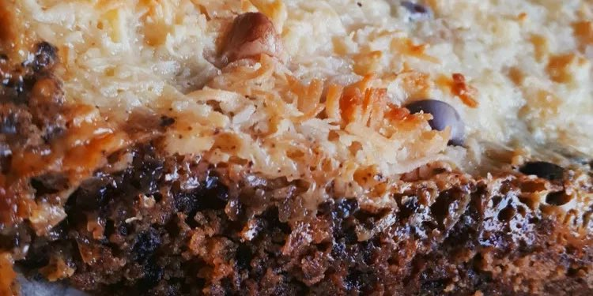

Seven Layer Bars
Prep Time: 10 minutes
Cook Time: 25 minutes
Yields: 24 cookie bars
Ingredients
- 1 ½ cups graham cracker crumbs
- ½ cup butter or margarine, melted
- 1 (14 ounce) can sweetened condensed milk
- 1 cup semi-sweet chocolate chips
- 1 cup butterscotch-flavored chips
- 1 ⅓ cups flaked coconut
- 1 cup chopped nuts
Directions
- Preheat the oven to 350 degrees F (175 degrees C) or 325 degrees F (165 degrees C) for a glass baking pan.
- Mix graham cracker crumbs and butter together in a small bowl until combined. Press crumb mixture firmly on the bottom of a 13x9-inch baking pan.
- Pour sweetened condensed milk evenly over crumb mixture; layer evenly with chocolate chips and butterscotch chips. Top with flaked coconut and sprinkle over chopped nuts; press down firmly with a fork.
- Bake in the preheated oven until lightly browned, about 25 minutes. Cool. Chill if desired. Cut into bars or diamonds. Store covered at room temperature.